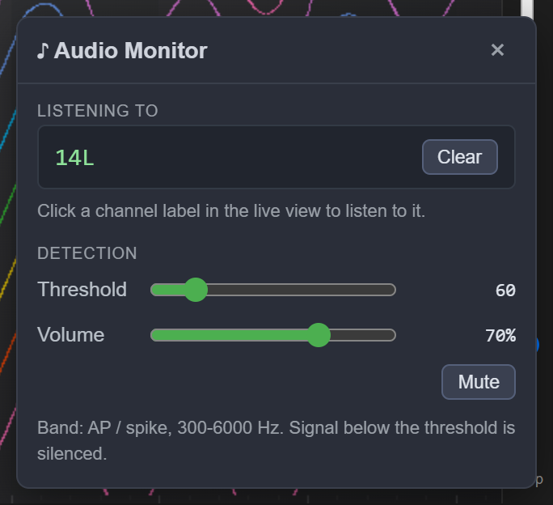
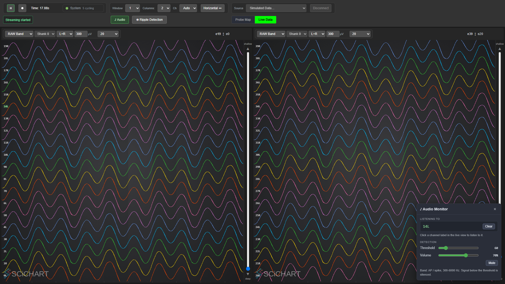

Spike audio — listening to a channel's AP band#
Monitor one channel through the speakers. The raw signal is band-passed to the spike band, passed through a threshold that silences everything small, and played. Spikes become audible clicks; the threshold is what separates them from hiss.
Modelled on Trodes
(Trodes/src-threads/audioThread.cpp), which does this well and whose approach is worth matching.

1. The signal path#
Everything runs in the backend (src/modules/audio/AudioProcessor.cpp); the panel only sets four
values and renders what the backend confirms.
data.npx.raw ──► band-pass 300–6000 Hz ──► digital diode (±threshold) ──► interpolate 30k→44.1k
(2nd-order Bessel) ──► × volume ──► speakers
Input is data.npx.raw. For a Neuropixels 2.0 probe that is the only stream there is — NP2
has no separate hardware AP band — so the AP band heard here is derived by these filters, using the
same filter code as the rest of the pipeline. That is exactly what makes this work on 2.0.
The band is AP/spike, not LFP. AudioProcessor::initData() previously called
setDefaultLFPFilterCoefs() with a TODO noting it was the wrong band, and it was: an LFP-filtered
signal carries no unit activity, so the monitor had nothing to play. It now uses
setDefaultSpikeBandFilterCoefs() — SpikeBandFilterCoefficients30kHz in src/core/Common.hpp.
Bessel rather than Butterworth for the same reason Trodes uses one: near-linear phase, so a spike
keeps its shape instead of ringing. Designed with
scipy.signal.bessel(2, [300, 6000], btype="bandpass", norm="mag", fs=30000). norm="mag" matters —
it puts the −3 dB points on 300 Hz and 6000 Hz (measured 300 / 5993 Hz, unity peak gain), where the
default norm="phase" drifts them to 374 / 5052 Hz and audibly thins the low end.
Measured response, dB relative to peak:
| 50 Hz | 100 Hz | 300 Hz | 1 kHz | 3 kHz | 6 kHz | 10 kHz | 14 kHz |
|---|---|---|---|---|---|---|---|
| −28.1 | −16.3 | −3.0 | −0.1 | −0.4 | −3.0 | −12.8 | −41.3 |
The digital diode. Everything within ±threshold collapses to silence and the rest shifts toward zero:
if (v >= 0.0f) v = std::max(v - thresh, 0.0f);
else v = std::min(v + thresh, 0.0f);
This is Trodes' shape (audioThread.cpp lines 206–211) and the reason a spike monitor sounds like
discrete clicks rather than continuous noise. Threshold is in ADC counts.
Interpolation and volume. Linear interpolation from the 30 kHz source to the 44.1 kHz output,
then volume. Gain is applied in float and clamped: it used to be an integer multiply into an int16,
so a volume above unity wrapped a loud spike to the opposite rail — a crack in the speaker at exactly
the moment the signal was most interesting.
2. Choosing a channel#
You pick a channel by clicking its label in the live view, not from inside the panel. That is where the channels actually are, and the choice is made by looking at traces.
ChartColumn.js routes a label click to the audio monitor when document.body carries the
audio-open class — the same idiom the ripple dock already uses to claim label clicks. The class is
set by AudioModule.toggle(). Precedence is audio first, then ripple: if you opened the audio panel,
a click means "listen to this".
The channel being listened to is drawn with .channel-label.listening (green, glowing), so the sound
is always attributable to a visible trace rather than to a number remembered from another panel.

The index sent to the backend is the read-out channel, which is what AudioProcessor indexes into
data.npx.raw. The label may display an electrode number (16L); those are not the same thing and
the distinction is why the click handler sends ch rather than the label text.
3. Control surface#
| control | command | range | notes |
|---|---|---|---|
| channel | setChannel |
-1 .. num_channels-1 |
-1 = nothing selected (the startup state) |
| threshold | setThreshold |
0 .. 400 counts | slider max is deliberately modest — a spike is tens to low hundreds of counts |
| volume | setGain |
0 .. 1 | slider is 0–100 % |
| mute | setEnabled |
bool | distinct from "no channel selected" |
Commands go out on binary id 0x218 carrying JSON ({"action": …, "value": …}), which is what
AudioProcessor::slApHandleCommand already subscribed to. State comes back as an audioState event,
relayed by WebSocketServer::slBroadcastAudioEvent exactly like the ripple detector's events:
{"event":"audioState","enabled":true,"channel":16,"threshold":25,"gain":0.5,
"num_channels":384,"band":"AP / spike, 300-6000 Hz","available":true}
The panel renders confirmed state, never its own request (issue #18). Every control writes
optimistically and is corrected by the next audioState. available:false means no output device was
found; the panel says so rather than pretending to work.
Sliders fire on input, not change, so dragging is audible as you drag — finding a threshold is a
listening task, and applying only on release makes it guesswork. The render skips writing back to a
slider that currently has focus, so the backend's echo cannot fight your finger.
4. Thread safety#
The live values are std::atomic on AudioProcessor, written from the main thread (command
dispatch) and read once per sample on the processor thread. Atomics rather than a lock because the
read is on the audio path and must never block; a torn combination of channel and threshold is not
worth preventing — it means one sample used the previous threshold.
With no channel selected the filter is still stepped with zeros, so selecting a channel does not dump a stale filter history into the speaker as a click.
5. Both probe types, and which band each listens to#
Every probe source gets audio. ProcessorManager auto-provisions proc.audio for any source
with a probe band, so a profile does not have to declare it — and a profile that does still wins.
Which band it listens to is decided from what the probe actually streams:
| probe | band | filtered? |
|---|---|---|
| 1.0 | data.npx.ap |
No. The probe high-passes its own AP band; that is the spike band. |
| 2.0 | data.npx.raw |
Yes — 2nd-order Bessel band-pass 300–6000 Hz. There is no AP stream to take. |
Filtering a band that is already the AP band is not neutral, which is why this is a decision and not an unconditional filter: it would high-pass an already high-passed signal and low-pass it at 6 kHz on top. Audibly duller, for nothing. The filter state is still stepped on the unfiltered path, so switching sources does not start from a stale history.
Until 2026-08-24 the processor read data.npx.raw unconditionally, so 1.0 rigs had no spike audio
at all — not because 1.0 cannot do it, but because nobody had generalised the input. A 1.0 probe is
arguably the better case: its AP band comes off the probe already banded, so the monitor costs one
memory read per sample and no filtering whatsoever.
A profile can override both:
- name: "proc.audio"
input: "data.npx.ap" # optional: which band to listen to
filter: false # optional: apply the 300-6000 Hz band-pass to it or not
The input_channels block seeds the initial threshold and volume. It does not set the listening
channel — that is an operator decision made against real traces, not something a YAML file can know.
audioState reports input_band and filtered, so the panel says which of the two it is doing
rather than a generic "AP / spike".
6. When there is no audio device#
A missing output device does not stop acquisition. It used to: Pa_Initialize() failing made
configure() return false, ProcessorManager treats a failed configure as fatal and abandons the
whole graph, so a machine with no speakers — or one whose device was held exclusively by something
else — could not connect a probe on any profile that listed proc.audio. The profile was
correct. The speakers were missing. Acquisition has to survive that.
The distinction configure() now draws is:
| what failed | weight | why |
|---|---|---|
validateConfig() — the profile is wrong |
fatal, as before | nothing can fix itself; the config needs editing |
Pa_Initialize() — this machine has no audio |
degraded | the monitor is a convenience laid over acquisition |
In the degraded case the processor still exists and still behaves like one: it subscribes to command
id 0x218, arms its start report and ticks every 200 ms so the liveness monitor is not staring at a
processor that never turns, and it answers state queries with
{"event":"audioState","available":false,"unavailable_reason":"...","...":"..."}
The panel greys itself out and says why. "Audio unavailable" with no reason is the kind of message that gets reported as a bug against the wrong component.
Both halves matter and both were bugs: reporting ready, because MainController does not start the
sources until every processor has, so a silent processor hangs the start outright; and ticking,
because a processor that never calls noteCycle() is reported as stalled (issue #16) for
working exactly as intended.
7. Which output device the sound comes out of#
A machine has several. This rig reports fourteen output devices across MME, DirectSound, WASAPI and WDM-KS — the same three physical outputs, enumerated once per host API. So "audio is on" is not a useful thing for the panel to say; which device is playing is.
Following the system default actually follows it#
Pa_GetDefaultOutputDevice() is not good enough, and this is the whole point of the feature. It
returns a concrete endpoint — measured here on 2026-08-24, index 1, "ASUS VE278 (NVIDIA High
Definition Audio)" via MME — and a stream opened on a concrete endpoint keeps playing to that
endpoint no matter what the operator later chooses in Windows. Changing your output device did
nothing.
Index 0 on the same machine was "Microsoft Sound Mapper - Output": Windows' virtual endpoint that
routes to whatever the current default is, and moves the instant the user changes it. So in
follow-the-default mode AudioWorker::findDefaultFollower() opens the follower and falls back to
the plain default only when there is none.
That buys real-time adaptation for free — no polling, no re-initialisation, no gap in the audio:
| platform | follower endpoint |
|---|---|
| Windows MME | Microsoft Sound Mapper - Output |
| Windows DirectSound | Primary Sound Driver |
| Linux | pipewire, pulse, or ALSA's default |
| macOS | none known — falls back to Pa_GetDefaultOutputDevice() |
It is matched by NAME, because PortAudio has no flag for it. That is a heuristic and it is allowed to miss: when it does, the behaviour is exactly what it was before, and the operator can still pin any device explicitly.
Picking one explicitly#
The panel lists every output device with its host API, plus "System default (follows your OS
setting)". Choosing one sends {"action":"setDevice","value":<index>} on id 0x218; -1 goes back
to following. The picker paints what the backend confirms, never the click — a device whose
format is unsupported is refused, and showing the operator a selection that is producing no sound is
precisely the failure this codebase keeps having (issue #18 family).
When the device goes away#
AudioWorker::slAwWatchDevice() polls Pa_IsStreamActive() once a second. A stream whose device has
been unplugged, disabled, or taken exclusively by another program stops without an error anywhere —
the monitor simply goes silent for the rest of the session. The watchdog notices, re-enumerates, and
reopens on whatever the machine offers now. The same path picks up speakers plugged in after the
session started.
Re-enumerating means Pa_Terminate() + Pa_Initialize(): PortAudio snapshots the device list at
initialisation and there is no portable notification that it changed. That is only legal with no
stream open, which is why every caller closes first.
8. Known gaps#
- ~~NP1.0 is unsupported~~ — fixed 2026-08-24; it reads the probe's own AP band. See §5.
- Mono only. One channel feeds both output channels. Trodes supports a reference channel
subtraction (
listenRefHWChan) and a notch filter; neither is implemented here. - Nobody has heard it move.
tests/gui/audio_panel.pyproves the backend opens the follower endpoint and that the picker round-trips through the backend — which is what makes following possible — but that sound is audible, and that changing the Windows output device really moves it, needs a person with speakers.